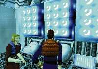

|

Review

Game Type: Third Person Action
Resident Evil with realtime-rendered backgrounds. Aside from the variable
camera angle the games are identical. You are of course presented with a
series of obstacles, and to overcome them you must use various items hidden
around the complex.
Gameplay: 70/100
Basically anything positive about Resident Evil is duplicated in OverBlood,
as is anything negative. The control schemes are very similar, and both can
get a little confusing at times. The preselected camera angles switch way too
often, but you can also switch to a first-person perspective (though this
doesn't let you see everything around you). Most of OB's puzzles can be
solved without a hint guide if given a little thought. Although it has little
replay value it's great the first time through, and the game is quite long.
The FMV clips cannot be skipped, which can get annoying if you have to repeat
them.
Graphics: 90/100
The character designs are good (Pipo the robot's cute), and though their movement is at times awkward
the animation is well done overall. The background designs are fantastic, with
glass bridges, narrow catwalks over yawning abysses, and everything (unless
mood demands otherwise) done in vivid colors. The prerendered FMV clips could
be better; they're obviously not motion captured and the figures aren't very
detailed.
Sound: 80/100
I can't really comment on the quality of the voice acting, since all the
clips are in Japanese, but the sound quality is excellent. The music consists
of unobtrusive, haunting tunes that add mood but not much else.
Overall: 70/100
The overall rating would be higher except for the obvious lack of replay value.
Still, it makes one heck of a rental. Since you would need to read Japanese
to solve the puzzles yourself I can't recommend this for import, but if you
liked Resident Evil you absolutely must try this game when it finally gets
brought to the U.S.
|